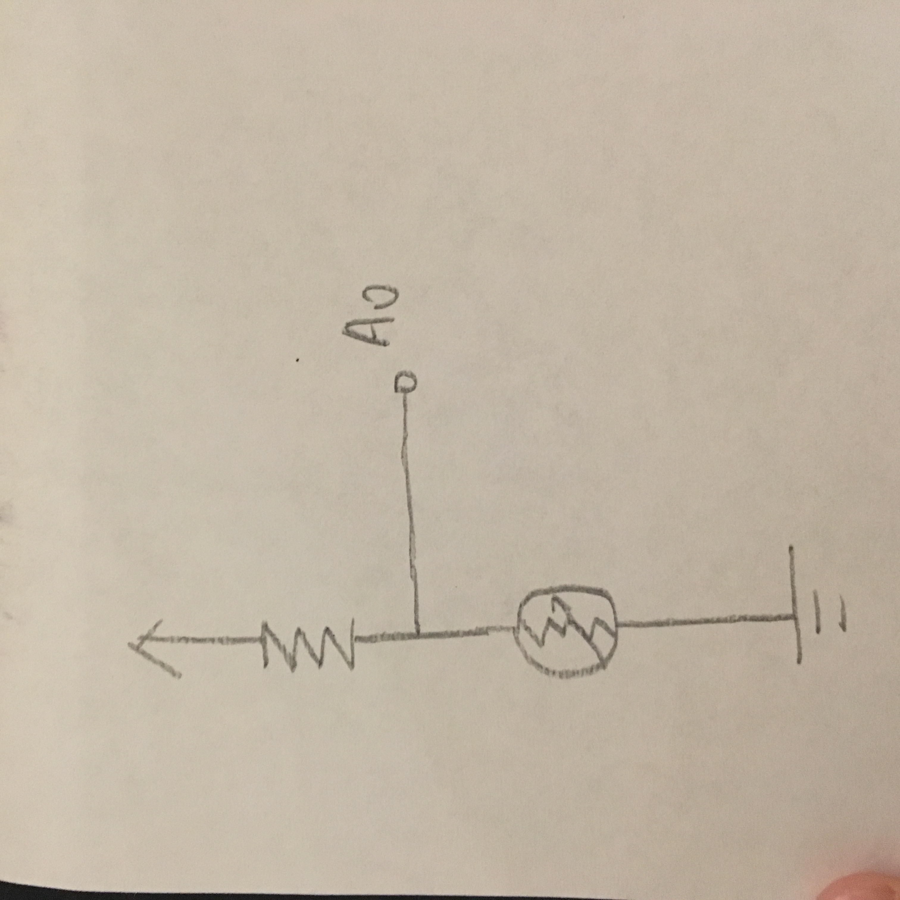
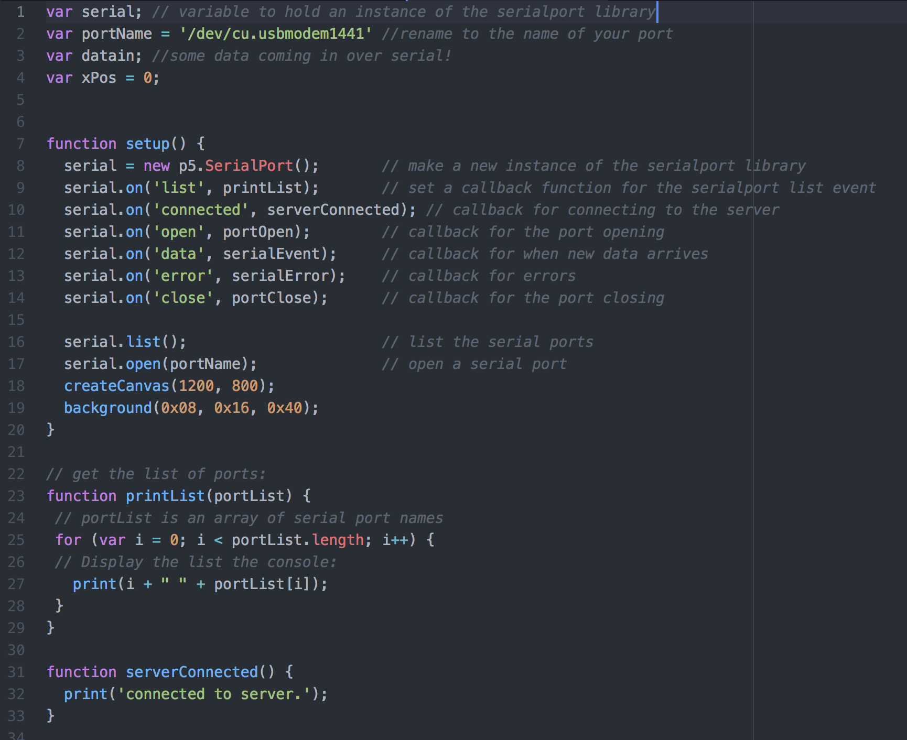

For the resistor with the photoresistor,
5V / 0.02A = 250Ω
So any resistors larger than 250Ω can be used. Here I use 10k.
The sensor reads from 448 to 867 out of 1023
so the voltage of the photoresistor ranges from 5*448/1023 = 2.19V,
to 5*867/1023 = 4.24V

Schematic - a light sensor
Circuit
Arduino Code

js

html

Operation -- the graph changes when I change the lighting around the light sensor